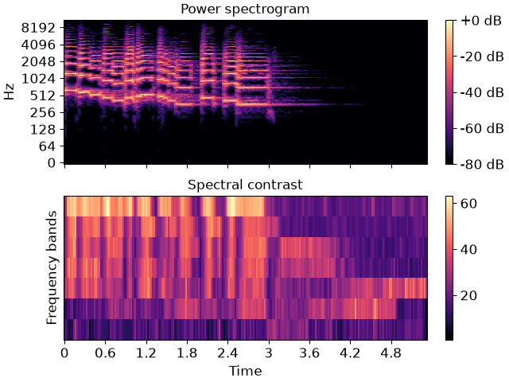

librosa.feature.spectral_contrast
- librosa.feature.spectral_contrast(*, y=None, sr=22050, S=None, n_fft=2048, hop_length=512, win_length=None, window='hann', center=True, pad_mode='constant', freq=None, fmin=200.0, n_bands=6, quantile=0.02, linear=False)[source]
Compute spectral contrast
Each frame of a spectrogram
Sis divided into sub-bands. For each sub-band, the energy contrast is estimated by comparing the mean energy in the top quantile (peak energy) to that of the bottom quantile (valley energy). High contrast values generally correspond to clear, narrow-band signals, while low contrast values correspond to broad-band noise. [1]- Parameters:
- ynp.ndarray [shape=(…, n)] or None
audio time series. Multi-channel is supported.
- srnumber > 0 [scalar]
audio sampling rate of
y- Snp.ndarray [shape=(…, d, t)] or None
(optional) spectrogram magnitude
- n_fftint > 0 [scalar]
FFT window size
- hop_lengthint > 0 [scalar]
hop length for STFT. See
librosa.stftfor details.- win_lengthint <= n_fft [scalar]
Each frame of audio is windowed by window(). The window will be of length win_length and then padded with zeros to match
n_fft. If unspecified, defaults towin_length = n_fft.- windowstring, tuple, number, function, or np.ndarray [shape=(n_fft,)]
a window specification (string, tuple, or number); see
scipy.signal.get_windowa window function, such as
scipy.signal.windows.hanna vector or array of length
n_fft
- centerboolean
If True, the signal
yis padded so that frametis centered aty[t * hop_length].If False, then frame
tbegins aty[t * hop_length]
- pad_modestring
If
center=True, the padding mode to use at the edges of the signal. By default, STFT uses zero padding.- freqNone or np.ndarray [shape=(d,)]
Center frequencies for spectrogram bins. If None, then FFT bin center frequencies are used. Otherwise, it can be a single array of
dcenter frequencies.- fminfloat > 0
Frequency cutoff for the first bin
[0, fmin]Subsequent bins will cover[fmin, 2*fmin]`, `[2*fmin, 4*fmin], etc.- n_bandsint > 1
number of frequency bands
- quantilefloat in (0, 1)
quantile for determining peaks and valleys
- linearbool
If True, return the linear difference of magnitudes:
peaks - valleys. If False, return the logarithmic difference:log(peaks) - log(valleys).
- Returns:
- contrastnp.ndarray [shape=(…, n_bands + 1, t)]
each row of spectral contrast values corresponds to a given octave-based frequency
Examples
>>> y, sr = librosa.load(librosa.ex('trumpet')) >>> S = np.abs(librosa.stft(y)) >>> contrast = librosa.feature.spectral_contrast(S=S, sr=sr)
>>> import matplotlib.pyplot as plt >>> fig, ax = plt.subplots(nrows=2, sharex=True) >>> img1 = librosa.display.specshow(librosa.amplitude_to_db(S, ... ref=np.max), ... y_axis='log', x_axis='time', ax=ax[0]) >>> fig.colorbar(img1, ax=[ax[0]], format='%+2.0f dB') >>> ax[0].set(title='Power spectrogram') >>> ax[0].label_outer() >>> img2 = librosa.display.specshow(contrast, x_axis='time', ax=ax[1]) >>> fig.colorbar(img2, ax=[ax[1]]) >>> ax[1].set(ylabel='Frequency bands', title='Spectral contrast')
